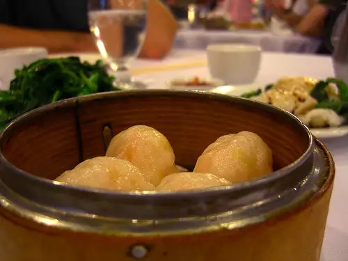

Recetas:-Shumai-de-puerco-y-camarón

A petición popular… bueno, en realidad solo fue Dn. R el que pidió que subiera la receta de los shumai del otro día (no eramos tantos comensales), aquí esta. Pero no sin antes hacer una breve explicación acerca de que son estas “chimichangas chinas niponas”. Para encontrar una definición acudiremos al oráculo google, de donde sale la siguiente: “Bocadillos chinos rellenos que parecen flores a punto de abrir”. Y bien, las recetas empleada el otro día es la siguiente (ahí mas o menos)
{kind=link}
para los de puerco:
- 600 gr. aprox de carne de puerco molida
- 1/2 tz de apio fina–muy fina–mente picado
- 3 cebollines también MUY finamente picados
- quisiera decir que salsa soya al gusto, pero aproximadamente cucharada y media, (soya japonesa) <<>>
- 1/2 cucharada de gengibre rallado
y para los de puerco con camarón:
- 300 gr. de carne de puerco molida
- 400 gr. de camarón fresco molido
- 1/2 tz de apio finamente picado
- 3 cebollines finamente picados
- 1 cucharada de salsa de lemongrass (es de esas salsas chinas que se compran en el mercado)
- 1 cdta de gengibre rallado
- salsa soya al gusto
muy importante en los dos casos, las hojas de wonton que se deben poder encontrar en el mercadito chino (oriental, pues… es que Mexicali es tierra de chinos) de su confianza.
Para la elaboración: en ambos casos y grosso modo, se mezclan todos los ingredientes y se rellenan las hojas de wonton. Bueno, y cómo se hace eso? Con mucho cuidado :), perdón, lo tenía que decir. Se toma con una cuchara, una bola de mas o menos 2~2.5 cm, se coloca en el centro de la hoja de wonton; posteriormente se mojan las orillas de la hoja de wonton (con como 1 cm debe ser suficiente) luego se toman dos esquinas opuestas, se juntan, luego las esquinas restantes, y así sucesivamente hasta que quedan como las florecillas a las que supone que se parecen (ver definición). Una vez que ya se tiene lo que correspondería a una tanda, es decir, lo que le quepa a la olla; se ponen a baño maría por unos 15 minutos. Aquí insero una foto para que quede mejor ilustrado, solo espero que el dueño de la foto no se moleste :P.
 Y bueno, estos se sirvieron con 4 diferentes salsas, 2 compradas (mango con gengibre y hoisin), 2 “caseras” basadas en curry, básicamente fue tomar las barras de curry, disolverlas y dejar que espesaran en agua caliente, despues dividir en 2 platos, una de ellas mezclada con leche de coco (de esa para las piñas coladas) para que fuera una mezcla un poco mas thai que china o japonesa y la otra au natural, para que quedara mas picante.
Y bueno, estos se sirvieron con 4 diferentes salsas, 2 compradas (mango con gengibre y hoisin), 2 “caseras” basadas en curry, básicamente fue tomar las barras de curry, disolverlas y dejar que espesaran en agua caliente, despues dividir en 2 platos, una de ellas mezclada con leche de coco (de esa para las piñas coladas) para que fuera una mezcla un poco mas thai que china o japonesa y la otra au natural, para que quedara mas picante.
Ah, y por si no les convencen las recetas, aquí estan 1, 2, 3 mas para que practiquen, y pueeees, compartan sus experiencias :).